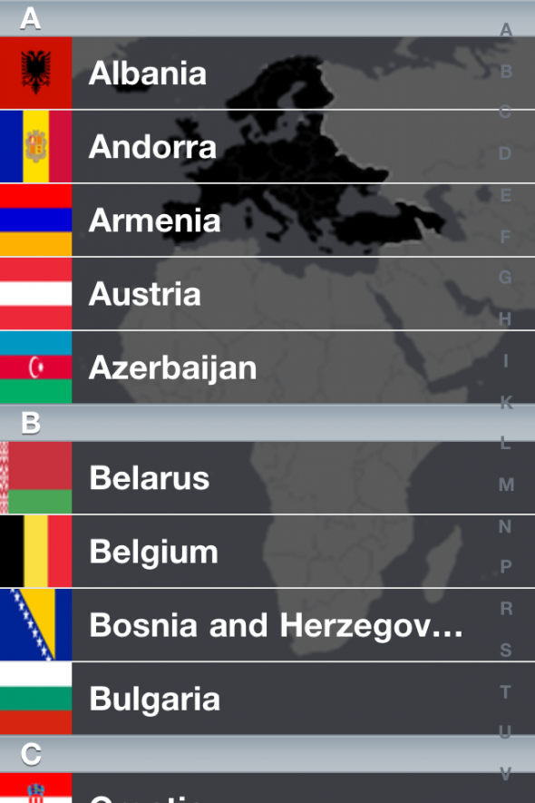
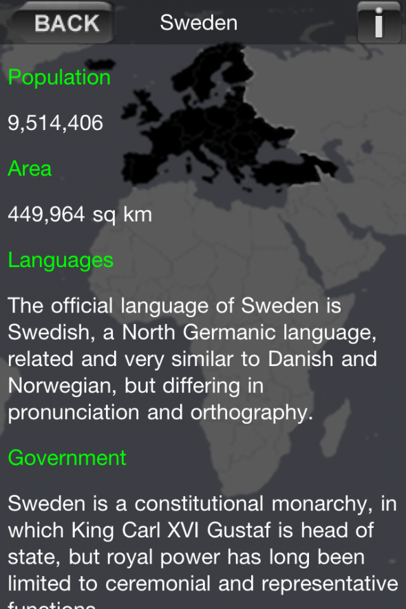
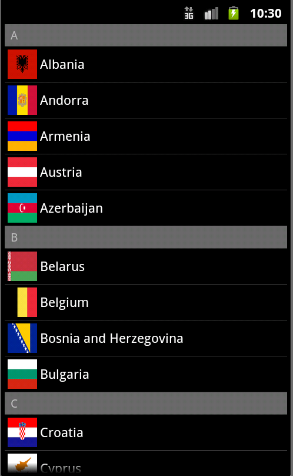
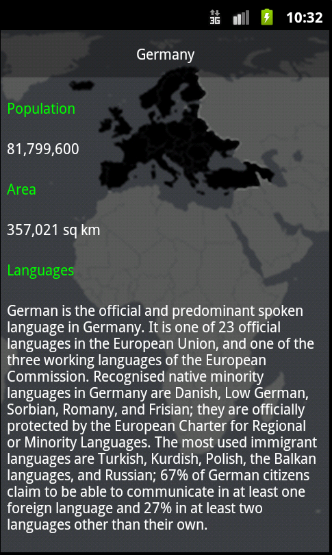
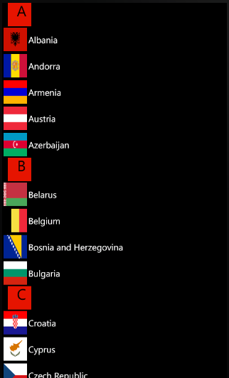
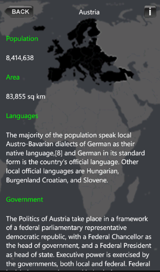

This example app demonstrates how to use the MoSync NativeUI's ListView widget to present an alphabetical list.
|  |  |
| CountriesListScreen on iOS | CountryInfoScreen on iOS |
|  |  |
| CountriesListScreen on Android | CountryInfoScreen on Android |
|  |  |
| CountriesListScreen on WP7 | CountryInfoScreen on WP7 |
This example is included in the MoSync SDK installation in the /examples folder. For information on importing the examples into your workspace, see Importing the Examples.
This example app runs on all platforms supported by the NativeUI Library (see Feature/Platform Support).
The example application has three screens: CountriesListScreen, CountryInfoScreen, DisclaimerScreen.
This screen is shown when the application starts. It contains all fifty countries that belong even partially to Europe continent. All countries are alphabetically arranged inside the list, from A to V. Each ListViewItem object shown on this screen has an title, the name of country, and an image, the flag of the country. Both the country name and flag are read from local files, which will be explained later.
This screen is shown when the user taps on one of the list items from CountriesListScreen.
On top of the screen you can see a label containing the name of the currently shown country, one button of the left used to navigate back to the previous screen and one button of the right used to show the DisclaimerScreen.
Note: On the Android platform, the back button is not shown because the devices physical back button is used to navigate to the previous screen. The disclaimer button is moved at the bottom of screen.
Below the country name you can see information about the selected country such as population, area, languages, government and capital.
This screen is used to explain that all the information and flags are taken from Wikipedia.
Note: As with CountryInfoScreen, it has an back button on iOS and WP7 platforms, but on Android the devices back button is used to navigate back to the previous screen.
Text data is stored in JSON encoded files that can be found under LocalFiles folder, while images are stored under the Resources folder.
To add/remove a country to/from the list you have to modify the CountryTable file. It contains a list of alphabetically arranged files that will be read when the application starts. The countries order from this file is the same as the one shown by the CountriesListScreen.
Each country data is read from a single file that can be found in the above mentioned file. Heres how Sweden country file looks like:
{
"Name" : "Sweden",
"FlagID": 46,
"Population" : "9,514,406",
"Area" : "449,964 sq km",
"Languages" : "The official language of Sweden is Swedish, a North Germanic language, related and very similar to Danish and Norwegian, but differing in pronunciation and orthography.",
"Government" : "Sweden is a constitutional monarchy, in which King Carl XVI Gustaf is head of state, but royal power has long been limited to ceremonial and representative functions.",
"Capital" : "Stockholm"
}
As you can see it contains six string encoded values and one as a number.
Note: The FlagID value is used as a number and it represents the resource id flag for this country. The list with all the flag images can be found in the Resources.lst file.